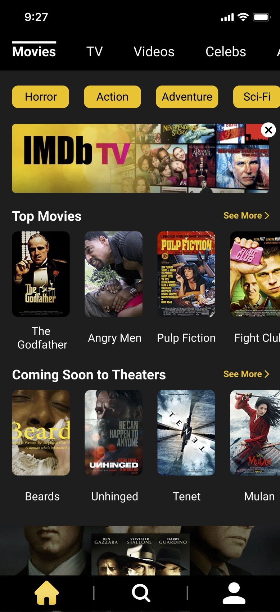
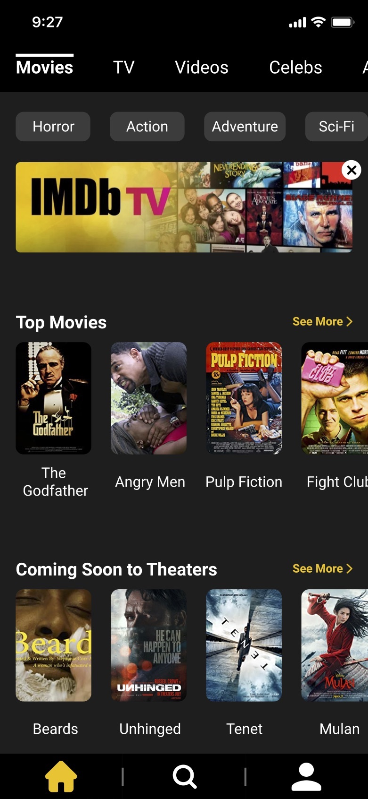

IMDb REDESIGN: CASE STUDY
By Melissa Gabriele, Hunter Hampton, Gabrielle Hoover, Devin Taylor and James Zangari
OVERVIEW
For such a popular service, IMDb’s app is confusing and tedious to navigate. Users want ease when browsing IMDb in order to quickly find the content they are looking for. This IMDb redesign focuses on a seamless interaction with a simplified interface, no repeated information, and prominence for the most important information to users based on surveys and user tests.
For the home page, the redesign focuses on grouping popular content into an easily browsable section by genre and content type. This is similar to IMDb’s current home page, but much easier to navigate and provides more content for the user to browse. The IMDb TV section was removed from the base IMDb app due to lack of knowledge and use of this section. IMDb TV will be a secondary app strictly for streaming. An advertisement for this app is added to the top section of the home page. The profile page was updated to make content saved to watchlists, favorited, rated, and reviewed easier to navigate. Users also have the option to share these sections or make them public to all users.
The search page was confusing to users due to filtering sections being separated between different windows of the page. For the redesign, the search filters have been moved to a universal filters section that is accessible on all versions of the search page (before, during, and after the search). The selected content page was greatly reduced into a page that is much more straightforward to navigate. Users no longer need to scroll down a long page of content to find the sections they are looking for.
This redesign focuses on creating a better experience for the users of IMDb. This is achieved by grouping like content, highlighting important content, and shortening long sections of vertical scroll to horizontal scroll sections. Throughout the testing, users have given positive reactions to the changes made, showing that this redesign is a pleasant user experience.
CONTEXT & CHALLENGE
IMDb is a popular online database consisting of information related to fims, television, video games, etc. IMDb is well known and trusted, but their application is frustrating and tedious to navigate. Our team redesigned this app with the purpose of creating an interface that is easy and pleasant to use while still featuring the content users come to see.
This project is a team redesign for IMDb’s mobile app. As a team, we met weekly and divided the work evenly between each member. Hunter was chosen as the project manager, with the rest of the group being the UX/ UI team. We worked together on the documents and visual designs needed to complete the project.
The goals of this redesign are to provide the content users come to IMDb for in a way that is easier for users to navigate/ browse. The success of this redesign is measured by user feedback. This redesign began with a user survey, worded to determine what users like/dislike about IMDb’s current app and what functions/pages are used the most. Based on this information a design was built and went through 1 stage of interviews and 4 stages of testing with changes being implemented based on the testing feedback. The goals of the redesign were kept in mind as we worked through the changes for each week.
THE PROCESS AND INSIGHT
The process started off with our team discussing what we thought should and shouldn't be included in the app, inputting our own thoughts, and drafting ideas for how each major screen would be, performed initial interviews on prospective users and combined our findings, this data was then used to create a rough wireframe of the design.
Each week our team performed individual prototype interviews on each major stage of the project, we then met to discuss our findings and as a group decided on design choices surrounding those findings. We chose to use Figma for design collaboration as it offers great collaborative modes. Afterwards, we each took an area to work on and developed it to the brief.
Getting to test four different times was very insightful, as the prototype sessions guided much of our design choices. As younger designers we naturally went for more modern aesthetics, but the average user is not the same demographic as us. Concessions were made accordingly, reminding us that WE are not the average user.
RESEARCH
TARGET AUDIENCE
For this project, our research began with a general survey we sent to IMDb’s target audience to gain insight into peoples’ impressions of IMDb’s app and what people use IMDb’s app for.
Following this user survey, we interviewed ten users over the phone with more specific questions about app use and the content they want to see. We then used this information to begin our initial redesign layouts.
USER PERSONAS
We created five user personas based on the five largest user types of IMDb. These personas helped us get into the mindset of the user, thinking about our redesign from their perspective.
AFFINITY MAPS
We created an affinity map based on the feedback we got from our surveys and phone interviews. Organizing the content into the following sections: positive (for positive reviews on the app), negative (for negative reviews on usability), competitor (for reviews about competitors, things competitors do that users like/dislike), quantitative (numerical data from our survey), uses (what users use IMDb for), and app (comments specifically about the app).
USER JOURNEYS
We used our survey data and user profiles to create a journey map based on a typical user interaction with IMDb’s app. This helped us to see low points in a user's journey and capitalize on them when deciding on changes for the redesign.
TASK FLOWS
Using the knowledge we gained from our mapping and survey we created current and future task flows for the main functions of IMDb’s app. This allowed us to begin visualizing the new user experience we planned to build.
DESIGN SKETCHES
This led us to sketches. When sketching ideas for the pages we worked individually, thinking about our maps, survey results, and user personas as we brainstormed ideas. We came together with our sketches, compiling and combining our best ideas to create our initial wireframes.
MOOD BOARD
We created a mood board for IMDb; pulling in images, colors, and fonts as inspiration for the redesign. Our mood board helped us move towards a decision for visuals for the redesign.
STYLE GUIDE
LOW FIDELITY PROTOTYPE
For our initial wireframes, we combined different ideas from everyone’s design sketches. The focus of this initial design is content and flow. We focused on expected content vs provided content and flow when we did our first rounds of user tests.
 Homepage for low-fidelity prototype
Homepage for low-fidelity prototype
Visit the working sample for this project here:
Low Fidelity PrototypeMID FIDELITY PROTOTYPE
For our next round of wireframes, we used user feedback to make changes, adding color, images, and fonts. We went with a darker scheme, using IMDbs logo colors. We used the accent color to draw the user’s eye to important content/buttons. We filled the home page with vertical image cards and the profile page with horizontal image cards to avoid too much similarity throughout the application. We focused on expected content vs provided content, flow, aesthetics, and readability for our last round of user tests before our final design.
 Homepage for final prototypeVisit the working sample for this project here:
Mid Fidelity PrototypeFINAL PROTOTYPE
For our final round of wireframes, we got largely positive feedback, but still had a few changes to make based on feedback. We adjusted spacing, some accent colors, sizing, and scroll on the filters section. Users found the nap easy to navigate, and the content to be what they expected if not more than what they expected. We will follow up with a final round of user tests to ensure all redesign goals are met.
 Homepage for mid-fidelity prototypeVisit the working sample for this project here:
High Fidelity Prototype